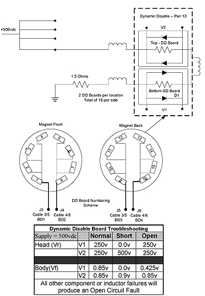
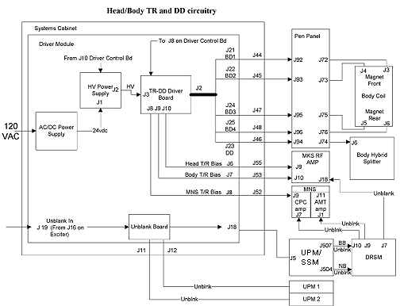
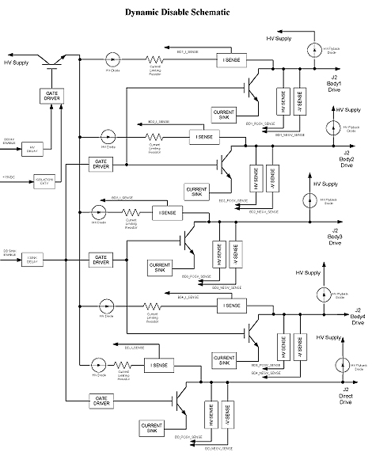
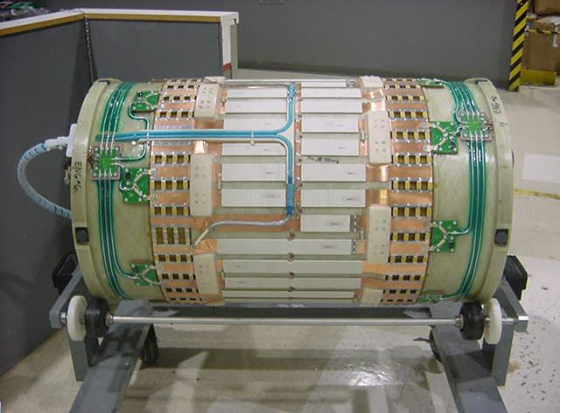
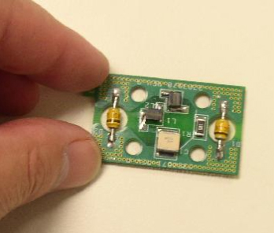
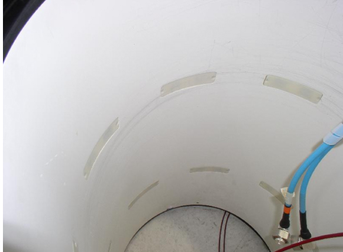
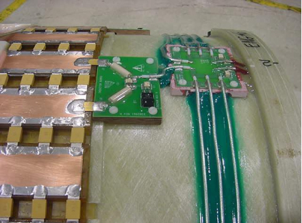

Proprietary to General Electric Company
Direction 5440000, Rev# 5
Signa HDxt Service Methods
Module Version 2.0, Version Date 9/10/08
Proprietary to General Electric Company |
| Required Persons | Preliminary Reqs | Procedure | Finalization |
|---|---|---|---|
| 1 | Not Applicable | Not Applicable | Not Applicable |
This document contains troubleshooting information for:
Dynamic Disable
Body Coil
Driver Module
Body Hybrid Splitter
Dynamic Disable Drive- BD1 (J21), BD2 (J22), BD3 (J24), BD4 (J25) put out the same voltage and can be swapped to isolate a bad Dynamic Disable circuit. If drive lines are swapped during troubleshooting, make sure to swap them back upon problem correction. Failure to do this may make future troubleshooting a DD Board malfunction extremely difficult. In addition:
Always swap the two drive lines that drive the FRONT Dynamic Disable Boards with each other. (BD1 and BD2).
Always swap the two drive lines that drive the REAR Dynamic Disable Boards with each other. (BD3 and BD4).
At the rear of the Driver module, the Output marked “DD” (J23) provides “Direct Drive” bias to the Hybrid Splitter for the purpose of disconnecting the Body Coil transmit circuitry during Head operation, and also disabling the Body Coil transmit circuitry during receive mode while the Body coil is in operation. The actual bias voltage is the same as BD1-BD4).
Never swap the drive lines and Run Dynamic Disable Drive Calibration.
Never perform a Dynamic Disable Drive Calibration during a malfunction. The Calibration process uses signal feedback to determine threshold values for error reporting. It is possible under certain failed conditions to erroneously calibrate a “Circuit Open” condition. Which would make future troubleshooting extremely difficult.
Upon repair, Dynamic Disable Drive Calibration should be performed.
Dynamic Disable board function can be checked under voltage with a Digital multi-meter in the bore. To do this, you must use the scanner to select a Head or Body Sequence prior to checking that particular modes’ function. Refer to Illustration 2 for nominal voltages.
Dynamic Disable Board diodes can also be checked individually, by pulling them out of the circuit and using the Diode Check function of the Digital multi-meter to test each diode. A good diode will be nominally: 0.35-0.6 volts in one direction and OPEN in the other direction.
There are two Dynamic Disable driver boards under each cover. Minimize problems with White Pixel or intermittent operation, by making sure to adequately tighten these screws. During initial system installation, it is a good idea to check the tightness of the Dynamic Disable board screws for those boards that will be under the bridge, prior to bridge installation.
It is possible to locate which 8 Dynamic Disable boards may be the problem, (Front or Rear) using Illustration 1 and Illustration 2 in this document.
A Dynamic Disable Open error will appear in the log if the voltage detected is greater than the limit set during calibration.
| NOTE: | These values in the error, are reported as positive (+) values even though they are negative. |
During DD Drive Calibration, A Dynamic Disable Open error will appear in the log if the calibration limit goes over 7000mv (7.0V). (This will generate an Open DD Circuit error in the log).
At the Rear of the Driver Module, the (TR) Transmit Receive bias outputs are: J6, J7 and J8.
The configuration file name and its location for the Driver Module is: /w/config/DcbConfig.cfg. Under NO circumstances should this file be changed unless you are directed by Support, after expert analysis. Consult the OLC and Service Engineering.
Reading Error message:
source of Fault %s %s = will refer to Head, Body or MNS subsystem Value: xxxx mA Limit: xxxx mA Normal Limit = Head =300mA Body = 80mA
Refer to MGD Cabinet Help Screens.
Refer to Driver Module Theory.
| NOTE: | Errors can relate to multiple failure modes |
Refer to Table 1.
Table 1: Problem / Solution Table
| FAULT | PROBLEM DESCRIPTION | GE FIELD ACTION | RELATED REPLACEMENTS |
| No Fault | System continues to scan without problem. Status box shows “ Driver Module In Service Mode” | Check Enable/Disable switches on front of Driver Module. This switch enables or inhibits T/R error reporting. | None |
| Non Specific | Multiple faults related to Dynamic Disable and TR in the error log. CAN Network errors. | Check CB1 at the rear of the Driver Module. Make sure it is in the ON Position. | None |
| error 2252305 File: SCP:DCBTR Driver Fault Detected- Open Circuit
Source of Fault is Body TR Value: xxxx mA Limit: xxxx mA | System detected an Open Circuit Fault in the Body and Head TR Bias circuit. | Biasing Circuitry. Use Illustration 1 and Table 2 and Step . Utilize the TR DD MC System Path Checkdiagnostic and TR DD MC System Path Troubleshooting document to pinpoint the cause of failure. | Driver Module cables, Body Hybrid, RF Amp |
| error 2252305 File: SCP: DCBTR Driver Fault Detected- Open
Circuit Source of Fault is Body TR Value: xxxx mA Limit: xxxx mA | System detected an Open Circuit Fault in the Body and Head TR Bias circuit in Head/Body or Multi-coil mode. System will not scan. | Troubleshoot TR Biasing Circuitry. Use Illustration 1 and Table 2 and
Step . Utilize the TR DD MC System Path CheckTR DD MC System Path Check diagnostic and Utilize the TR DD MC System Path Check diagnostic and Troubleshooting document to pinpoint the cause of failure | Driver Module, cables, Body Hybrid, RF Amp |
| Dynamic Disable Circuit Fault | System detected an Open Circuit Fault in the Dynamic Disable Bias circuitry. System will not scan. | Troubleshoot Dynamic Disable Circuitry. Refer to Illustration 1 and Step . Check Outputs with Digital multi-meter. Utilize the TR DD MC System Path Check diagnostic and TR DD MC System Path Troubleshooting document to pinpoint the cause of failure | Driver Module, cables, DD Filter, DD Boards, Body Hybrid |
| error 2252305 File: SCP:DCBTR Driver Fault Detected- Open Circuit
Source of Fault is Body TR Value: xxxx mA Limit: xxxx mA | System detected an Open Circuit Fault in the Body TR Bias circuitry. System will not scan. | Troubleshoot TR Biasing Circuitry. Use Illustration 1 and Table 2 and Step . If voltages are OK, Possible Body Coil problem. Consult Support prior to removing/replacing Body Coil. | Body Coil |
| error 2252306TR Driver Fault Detected - Short Circuit. Source
of Fault is Body TR Value: xxxx mA Limit: xxxx mA-> | System Detected a short in the Body TR bias circuitry | The Hybrid is thermally protected. If the Value is between
80-200MA, the Hybrid Splitter may overheated. Allow the Hybrid to
cool. If the problem goes away but overheating occurs again, refer
to RF Maximum Power Calibration procedure. Possible excessive reflected
power. If Value is between 350-450MV This could be indicating that there is a shorted diode in the Body Hybrid Splitter. See Body Hybrid Troubleshooting section in this document. Troubleshoot DD Bias (Circuit begins at J23 at rear of Driver Module). BD1,BD2,BD3,BD4 and DD all have the same voltages. Use that to your advantage: 1. Swap BD1 line with DD line. If problem appears on the BD1 Line The problem is in the Driver Module. If problem remains on DD cable, the problem is outside of Driver Module. Continue troubleshooting short. 2. DO NOT leave BD1 and DD swapped. Switch them back to original configuration. Utilize the TR DD MC System Path Check diagnostic and TR DD MC System Path Troubleshooting document to pinpoint the cause of failure. | Body Hybrid Splitter Damaged RF Cables/ connector.DD Filter Box DD Boards |
| error 2252306TR Driver Fault Detected - Short Circuit. Source
of Fault is Body TR Value: xxxx mA Limit: xxxx mA-> | System Detected a short in the Body TR bias circuitry | Refer to Illustration 2. DD Diodes in the hybrid may be defective. Make sure the system is in Body mode, check Input and Output connections and DD board diodes using Diode Function Check of Digital multi-meter. Utilize the TR DD MC System Path Check diagnostic and TR DD MC System Path Troubleshooting document to pinpoint the cause of failure | Body Hybrid Splitter DD Boards |
| Noisy Head images | Noisy Head images | System can’t detect a single shorted Dynamic Disable
diode or board. In some cases, the circuit design does not provide
for enough voltage drop or current draw to cause a significant loss
of drive power. Therefore it is possible to have Noisy Head Images
without a hard failure noted in the error log. The best way to troubleshoot this situation is to remove each Dynamic Disable Board and use and Digital multi-meter Diode test function, to find the shorted diode/Bad board. Look for diode action. Typically, in one direction you should see .35 –6 Vdc. Reversing the polarity of the measurement will result in an Open or Infinity measurement. Refer to Illustration 1 and Illustration 2 and its associated table to troubleshoot. | Replace defective Dynamic Disable Board or Dynamic Disable Boards. |
| Noisy Head images | Noisy Head images | System can’t detect a single shorted Dynamic Disable
diode or board. In some cases, the circuit design does not provide
for enough voltage drop or current draw to cause a significant loss
of drive power. Therefore it is possible to have Noisy Head Images
without a hard failure noted in the error log. If the Diodes on the Dynamic Disable Boards are all OK, or all suspected Dynamic Disable Boards were replaced, (Refer to Illustration 1 and Illustration 6 and associated tables to determine which boards should be replaced), Ohm out Body Coil “I” and “Q” (Blue cables). From Center pin to outer case should read Open or infinity. If there is a resistance seen, It is possible that the Body Coil may have a shorted capacitor or other electrical damage.Consult Support prior to removing/replacing Body Coil. | Replace Body Coil |
| Error describes a possible shorted Dynamic Disable Diode. | Error log describes a possible shorted Dynamic Disable Diode. | A shorted diode on the Dynamic Disable Board is a rare condition.
Generally, Diodes fail by shorting. The best way to troubleshoot this situation is to remove each Dynamic Disable Board and use and Digital multi-meter (Use Diode Test Function) to find the open diode. Refer to Illustration 1, Illustration 2 and Illustration 3 to determine which boards to look at. Look for diode action. Typically, in one direction you should see .35 –6 vdc. Reversing the polarity of the measurement will result in an Open or Infinity measurement. Refer to Illustration 1 and Illustration 2 and its associated table to troubleshoot. | Replace defective Dynamic Disable Board. |
| 1077534964 The Driver Module Has Detected a Power Supply Fault.
Source of Fault is High Voltage Power Supply. Actual Voltage = xx.x V Limit Voltage = xxx.x V | This error can be a result of a shorted output of the Driver Module. | Utilize the TR DD MC System Path Checkdiagnostic and TR DD MC System Path Troubleshooting document to pinpoint the cause of failure.
Use Illustration 1, Illustration 2, Illustration 3 and Step to isolate which Driver Module output is causing the problem. | Identify cable problem |
| 1077535774(DD) Dynamic Disable Driver Fault Detected - High
Voltage Fault. Source of Fault is BDx. Value = xx V Limit: 425 V | Errors related to Body coil Direct Drive (Hybrid Splitter) or Dynamic Disable Driver Faults detected- (Short Circuit) in error log. | First check Body Hybrid Splitter, (DD) Direct Drive circuit. System can’t detect which Dynamic Disable board is causing the problem. (BD1, BD2, BD3, BD4)These acronyms relate to an output of the Driver Module, not a specific Dynamic Disable board. Refer to Illustration 1, Illustration 2 and Illustration 3 to determine which set of Dynamic Disable Boards could be at fault. Loose Dynamic Disable Boards can cause this problem. Tighten all Dynamic Disable Board screws.In addition, check the Drive Module output as well, using Illustration 2 as your guide. The Body Coil may cause this problem. If the Body Hybrid Splitter, Dynamic Disable Board, cabling or the driver module checks out OK. Troubleshoot Body Coil. Consult Support before removing or replacing the Body Coil. | Replace Body Hybrid Splitter Replace defective Dynamic Disable Board. Something in the Dynamic Disable Board circuit is causing the problem. In some rare cases, this could be an internal problem with the Body Coil, which can only be determined by removing the body coil. Generally, this can be isolated to a specific location on the coil. Consult Support before removing or replacing the Body Coil. |
Illustration 1: Dynamic Disable Locations

Table 2: Dynamic Disable (Red) cables in Front and Rear of Body Coil
| Dynamic Disable (Red) cables in Front and Rear of Body Coil | |||||||
| DVM In Diode Function test mode – lead on Center pin and + lead on case/connector | |||||||
| Magnet Front-Looking INTO bore: | Magnet Rear-Looking INTO bore: | ||||||
| Value (Typical) | Value (Typical) | ||||||
| Cable 3/5 | J3 | BD1 | .630-.640 | Cable 3/5 | J5 | BD3 | .630-.640 |
| Cable 4/6 | J4 | BD2 | .630-.640 | Cable 4/6 | J6 | BD4 | .630-.640 |
| (Reverse DVM leads) Should see OPEN on all cables with + lead on center pin – Lead on case. | |||||||
| NOTE: | These high voltage BNC connectors can be damaged if a standard BNC T is used. Use a MHV BNC T to test under load conditions. |
Table 3: Driver Module-Dynamic Disable Nominal Voltage Levels
| Rear of Driver Module | Rear of Systems Cabinet | Pen Panel | Body Mode | Head Mode | ||||
| Dynamic Disable | ||||||||
| Equip Room | Mag Room | Loaded (±0.5 V) | Unloaded (±1.0 V) | Loaded (±15 V) | Loaded (±15 V) | |||
| BD1 | J21 | J44 | J92 | J72 | -3.8 vdc | -13.0 vdc | +500 vdc | +500 vdc |
| BD2 | J22 | J45 | J93 | J73 | -3.8 vdc | -13.0 vdc | +500 vdc | +500 vdc |
| BD3 | J24 | J47 | J95 | J75 | -3.8 vdc | -13.0 vdc | +500 vdc | +500 vdc |
| BD4 | J25 | J48 | J96 | J76 | -3.8 vdc | -13.0 vdc | +500 vdc | +500 vdc |
| (DD) Direct Drive - Body Hybrid | J23 | J46 | J94 | J74 | -3.8 vdc | -13.0 vdc | +500 vdc | +500 vdc |
| As measured with + lead on Center Pin. | ||||||||
Table 4: Driver Module - (TR) Transmit/Receive Nominal Voltages
| Rear of Driver Module | Rear of Systems Cabinet | Rear of RF Amp | As measured with BNC-T at rear of Driver Module | ||
| Xmit (±1.0 V) | Rcv (±1.0 V) | ||||
| Head | J6 | J55 | J9 | +8.0 vdc | -14.40 vdc |
| Body | J7 | J53 | J10 | +4.5 vdc | -14.40 vdc |
| MNS | J8 | J52 | J9 | +4.3 vdc | -14.40 vdc |
| As measured with + lead on Center Pin. | |||||
Illustration 2: Head/Body TR and DD Circuitry

Illustration 3: Dynamic Disable Schematic

Check Test Points – Diode Test:
J1 of Hybrid Splitter: Perform Diode Function check with a Digital multi-meter in Diode Function Check mode, from center pin to case. Voltage drop should be between 0.35 volts and 0.6 volts in one direction and should result in an open indication when measured in the other direction. If not, replace Hybrid Splitter.
J6 of Hybrid Splitter: Perform Diode check with a Digital multi-meter (Use Diode Test Function). Place negative lead on center pin and positive lead on shield. Voltage value should be between 0.35 volts and 0.6 Volts. Reversing the leads should result in an open indication.
J7 and J8 relate to a feature not yet implemented. These two outputs allow the UPM to monitor redundant reflected power at the hybrid for a more accurate measurement of actual RF power. J7 and J8 should read 50 Ohms from center pin to case. If you see a resistance other than 50 Ohm, the condition can be temporarily fixed by terminating the cables (Or at the UPM-Hybrid connectors) with 50-Ohm terminators, effectively removing this circuit. The system needs to see a 50 Ohm load at J7 and J8 to allow scan. Using 50 Ohm terminators to solve this problem in the long term is not acceptable. The Hybrid should be replaced as soon as possible. Refer to the UPM Troubleshooting Guide for further information.
Refer to the following Illustrations:
Illustration 4: Body Coil

Illustration 5: Dynamic Disable Board and Diodes

Illustration 6: DD Board Cover Locations in Bore

Illustration 7: Splitter Boards (Not Field Replaceable—Remove Body Coil to see them)

No finalization steps.